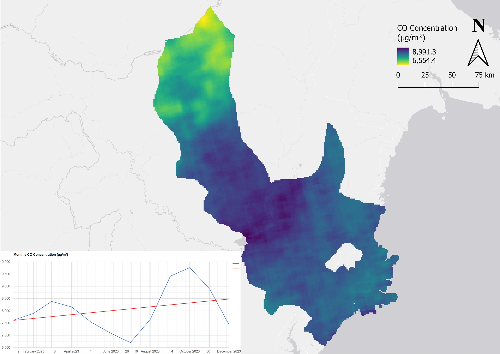

07 / Geospatial analysis
Mapping atmospheric pollutants in Kutai
Exploring the spatial distribution and monthly variation of CO, NO₂, and SO₂ using Sentinel-5P imagery.


The question behind the map.
This project maps atmospheric pollutant patterns in Kutai Kartanegara, East Kalimantan, during 2023. Three pollutants are compared through thematic maps and monthly charts.
How I approached it.
Sentinel-5P satellite imagery was processed to visualize carbon monoxide (CO), nitrogen dioxide (NO₂), and sulphur dioxide (SO₂). The workflow combines regional maps with time-series charts to examine spatial patterns and changes through the year.
What the work shows.
The gallery includes the three pollutant maps, a processing view, and monthly trend charts. The maps provide an exploratory view of atmospheric patterns. Product units and any conversions should be checked before interpreting the chart values as ground-level concentrations or comparing them with exposure standards.
Reading the results
Personal mapping project. A mapped atmospheric pattern does not, by itself, attribute emissions to a particular source or quantify ground-level exposure.
Supporting materials
A closer look.
Maps and processing views from this project. Select an image to view it at a larger size, or use the arrow keys to move through the gallery.